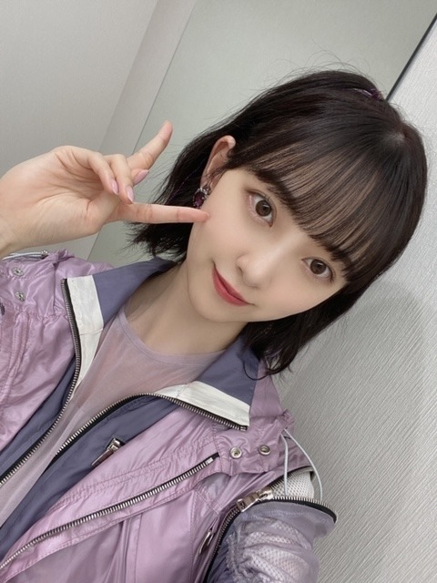
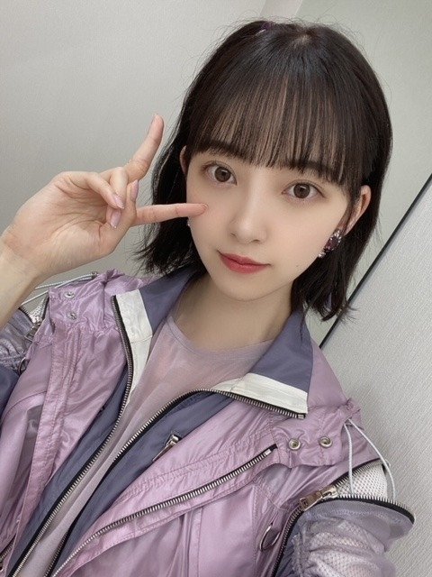
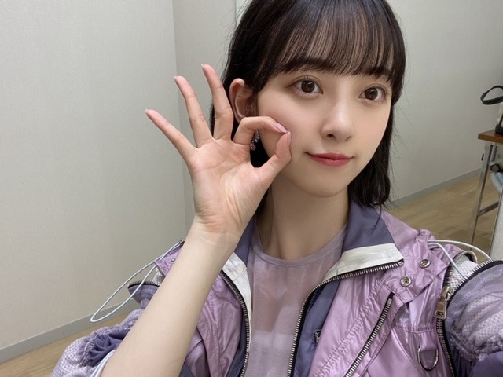

2020/0725Satゼリーたくさんたべてる
Mステ
Route 246 初披露でした^ - ^
どうでしたか？
番組終了後にはMステの生配信
にも出させていただき
チョコレートプラネットさんの好きなネタ
" 氷室じゃんけん " を教えていただきました！笑
嬉しかったあ〜
でもやはり声の出し方とか難しかったです。笑


mvと同じく
おんぷちゃんヘア♩にしました〜
髪色は染めたばかりで衣装に合わせて
パープルとピンクとベージュを混ぜた
˗ˏˋ twilight beige ˎˊ˗
というカラーにしてみました♡
twilightって朝焼けみたいなピンクパープルの
色のことらしいです！

ね〜同じ髪色にしよ〜^ - ^
今後も歌番組いろいろ出させていただきます！
たのしみ！
ではでは
2020/07/25 20:06
コメント(274)
未央奈さん、ブログ更新ありがとう。どこにでもいるおっさんです。
Ｍステ見たよ。
めっちゃかっこいい曲だね。
ふりつけもかっこいいし。
やっぱ、未央奈さんに目がいっちゃうな～。
ではでは
ひでき
Ｍステ見たよ。
めっちゃかっこいい曲だね。
ふりつけもかっこいいし。
やっぱ、未央奈さんに目がいっちゃうな～。
ではでは
ひでき
mステ見ました！
パフォーマンスがかっこよくて、衣装も凄い良くておんぷちゃんヘアも最高に可愛かったです！
エクステも凄い良いですね！
氷室じゃんけん面白かったです笑
また見たいですね笑
次の音楽番組も楽しみにしてますね！
パフォーマンスがかっこよくて、衣装も凄い良くておんぷちゃんヘアも最高に可愛かったです！
エクステも凄い良いですね！
氷室じゃんけん面白かったです笑
また見たいですね笑
次の音楽番組も楽しみにしてますね！
堀ちゃん、ブログ更新あろがとう！！
正直、route246もいいけど、
やはり、アナスターシャの方がいい曲だと
思います！！
がんばってください！！
応援してます！！
今日は雨ですが、元気です！！
正直、route246もいいけど、
やはり、アナスターシャの方がいい曲だと
思います！！
がんばってください！！
応援してます！！
今日は雨ですが、元気です！！
未央奈ちゃん更新ありがとう！
Mステ見たよ！
Route 246めっちゃ好き！あのメロディがたまらないです！
衣装も踊りもカッコよかったよ！
写真たくさんありがとう！
私の貴重な動力源です！笑
ほんとに素敵なパフォーマンスをありがとう！
またテレビで見れるのを楽しみにしてるね！
ではでは！
Mステ見たよ！
Route 246めっちゃ好き！あのメロディがたまらないです！
衣装も踊りもカッコよかったよ！
写真たくさんありがとう！
私の貴重な動力源です！笑
ほんとに素敵なパフォーマンスをありがとう！
またテレビで見れるのを楽しみにしてるね！
ではでは！
未央奈、良いね。
髪型、色、衣装とマッチしてパーフェクト。
実に未央奈らしい♪
この楽曲全てが未央奈の為に存在するくらいハマってる。これから観る機会も増えるだろう、楽しみだよ。
個人的にはこれまでで最強・最高の未央奈です(^^)
髪型、色、衣装とマッチしてパーフェクト。
実に未央奈らしい♪
この楽曲全てが未央奈の為に存在するくらいハマってる。これから観る機会も増えるだろう、楽しみだよ。
個人的にはこれまでで最強・最高の未央奈です(^^)
ブログ更新ありがと〜
Mステ、かっこよくてかわいくて最高でした‼︎♡
衣装もすごい似合ってたよ〜
生で一回見て、昨日とかも録画したやつを繰り返し繰り返しみてました笑
また乃木坂のパフォーマンスが見れるのを楽しみにしてます‼︎
Mステ、かっこよくてかわいくて最高でした‼︎♡
衣装もすごい似合ってたよ〜
生で一回見て、昨日とかも録画したやつを繰り返し繰り返しみてました笑
また乃木坂のパフォーマンスが見れるのを楽しみにしてます‼︎
ブログ更新ありがとう❤︎
髪色可愛い！！このカラーにするね！
髪染めるの楽しみだな〜！
未央奈ちゃんのおんぷちゃんヘア超可愛いくて好き！
髪色可愛い！！このカラーにするね！
髪染めるの楽しみだな〜！
未央奈ちゃんのおんぷちゃんヘア超可愛いくて好き！
未央奈！
パフォーマスサイコーだったよ！曲もよきよき。
早くライブに行きたくなりました！
氷室じゃんけんも大爆笑しながらみてました！未央奈から沢山の笑顔、元気もらえたよ〜
ありがとう
体調管理気をつけてね。
では
パフォーマスサイコーだったよ！曲もよきよき。
早くライブに行きたくなりました！
氷室じゃんけんも大爆笑しながらみてました！未央奈から沢山の笑顔、元気もらえたよ〜
ありがとう
体調管理気をつけてね。
では
みおなの面白さが少しずつ世間にも広まってる感じ〜ドリームバイトのせいやさんなんか、みおなに振るの超楽しそうだもん。映画とかでみおなワールド全開の役観てみたいなぁ。ではは
ハイ綺麗
おはよー。セブンだよ(ฅ'ω'ฅ)♪
新衣装めっちゃ好き
カッコいいよね！
その衣装なら絶対ショートの方がいいよ(๑˃̵ᴗ˂̵)
音符ヘアもかわいい
髪色良いね
オレも昨日染めたよー
おそろっちーヾ(o´∀｀o)ﾉﾜｧｰｨ♪
では、今日も1日楽しんで生きましょうd(@^∇ﾟ)/ﾌｧｲﾄｯ♪
o(ﾟ▽＾)ﾉｼまたねぃ♪
新衣装めっちゃ好き
カッコいいよね！
その衣装なら絶対ショートの方がいいよ(๑˃̵ᴗ˂̵)
音符ヘアもかわいい
髪色良いね
オレも昨日染めたよー
おそろっちーヾ(o´∀｀o)ﾉﾜｧｰｨ♪
では、今日も1日楽しんで生きましょうd(@^∇ﾟ)/ﾌｧｲﾄｯ♪
o(ﾟ▽＾)ﾉｼまたねぃ♪
Mステお疲れ様でした。
バリバリの小室サウンドで、新しい乃木坂が見れました。
かっこいいの一言！
曲、ダンス、衣装など全てが融合して素敵な一曲になってるなと。
これから沢山聴きます。
MVのフルバージョンが観たいです。
では。
★とし★
バリバリの小室サウンドで、新しい乃木坂が見れました。
かっこいいの一言！
曲、ダンス、衣装など全てが融合して素敵な一曲になってるなと。
これから沢山聴きます。
MVのフルバージョンが観たいです。
では。
★とし★
堀ちゃんの笑顔は最高です
更新待ってました〜
Mステのパフォーマンス良かったよ！
おんぷ未央奈すぐわかった〜
早くMV見たいなぁ
氷室じゃんけんめっちゃ面白かったw
次の更新も待ってます！
Mステのパフォーマンス良かったよ！
おんぷ未央奈すぐわかった〜
早くMV見たいなぁ
氷室じゃんけんめっちゃ面白かったw
次の更新も待ってます！
Mステのパフォーマンスカッコよかったよ!
今後の歌番組での活躍ぶりも楽しみにしてるね!
今後の歌番組での活躍ぶりも楽しみにしてるね!
みおなちゃん、大好きです
ブログ更新ありがとー
Route246カッコよくて、最高でした！！
これからの歌番組も楽しみにしてます
これからも頑張ってください応援してます♥
Route246カッコよくて、最高でした！！
これからの歌番組も楽しみにしてます
これからも頑張ってください応援してます♥
おつかれん
お疲れ様です！Mステ～メッチャkawaiiカッター！体調くれぐれも気を付けてファイト！です！応援しています！
だいすき！！！！！！
ほんとだいすき！！！！！
ほんとだいすき！！！！！
仕事頑張ってね
おはよー。❗
一昨日、Music Stashon
観たよ。
「Route 246」
衣装もダンスもかっこよく、魅せられたらねー。♥
未央奈、自然な表情がかわいかったよ。♥♥
セリーを食べ過ぎたけど、大丈夫ですか？
この季節、食事にも気をつけてね❗
先日の「シブヤノオト」
神宮球場で、歌ってるのを観て、メチャ感動した。❗❗♥
一昨日、Music Stashon
観たよ。
「Route 246」
衣装もダンスもかっこよく、魅せられたらねー。♥
未央奈、自然な表情がかわいかったよ。♥♥
セリーを食べ過ぎたけど、大丈夫ですか？
この季節、食事にも気をつけてね❗
先日の「シブヤノオト」
神宮球場で、歌ってるのを観て、メチャ感動した。❗❗♥
未央奈ちゃんこんにちは。Route246のｍステでの初披露見させてもらいました。カッコ良かったですね。曲調も衣装もこれまでの乃木坂にはなかった感じでしたね。
でも40代半ば過ぎの僕的にはあのサウンドはイントロを聞いた瞬間に小室さんの楽曲に溢れていた90年代にフラッシュバックするような感覚でした。
若い世代には耳慣れないサウンドかもしれないけど、僕ら世代からしたら懐かしくとても心地よい、そして気持ちが上がるサウンドでした。これからも何度となく聴けるのが楽しみです。
カッコ良いダンスナンバーだからこそ、いつかライブで見てみたいですね。
あと、MVを見てちょっと思ったんだけど、未央奈ちゃん腹筋割れてない？一瞬だったんだけど「凄っ！」って思ったんだけど気のせい？未央奈ちゃんはストイックだからもしかしてと思ったんでね。
でも40代半ば過ぎの僕的にはあのサウンドはイントロを聞いた瞬間に小室さんの楽曲に溢れていた90年代にフラッシュバックするような感覚でした。
若い世代には耳慣れないサウンドかもしれないけど、僕ら世代からしたら懐かしくとても心地よい、そして気持ちが上がるサウンドでした。これからも何度となく聴けるのが楽しみです。
カッコ良いダンスナンバーだからこそ、いつかライブで見てみたいですね。
あと、MVを見てちょっと思ったんだけど、未央奈ちゃん腹筋割れてない？一瞬だったんだけど「凄っ！」って思ったんだけど気のせい？未央奈ちゃんはストイックだからもしかしてと思ったんでね。
氷室ジャンケン面白かった笑笑
mステ とかシブヤノオト みててもやっぱみおなが好きだなぁと思いました^_^
ではでは
mステ とかシブヤノオト みててもやっぱみおなが好きだなぁと思いました^_^
ではでは
未央奈ちゃん、ブログ更新ありがとう！
Mステ見たよ！かっこよかったし最高だったよ！他の番組でも見れるんだね！楽しみだー！
同じ髪色にはできないな…黒が好きだし、バイトできなくなっちゃうからね…ごめんね。
体調には気をつけてね。
Mステ見たよ！かっこよかったし最高だったよ！他の番組でも見れるんだね！楽しみだー！
同じ髪色にはできないな…黒が好きだし、バイトできなくなっちゃうからね…ごめんね。
体調には気をつけてね。
みおなちゃん、こんにちは。
Mステ、僕は見たよ。録画しながら見たよ。Route 246のダンスパフォーマンス、めっちゃかっこよかったです。Route 246、めっちゃいい曲ですね。みおなちゃん、めっちゃ綺麗で、めっちゃかわいかったです。
生配信番組は、見逃してしまいました。みおなちゃん、ごめんなさい。
みおなちゃん、体調に気をつけて仕事頑張ってね。
またコメントするね。
Mステ、僕は見たよ。録画しながら見たよ。Route 246のダンスパフォーマンス、めっちゃかっこよかったです。Route 246、めっちゃいい曲ですね。みおなちゃん、めっちゃ綺麗で、めっちゃかわいかったです。
生配信番組は、見逃してしまいました。みおなちゃん、ごめんなさい。
みおなちゃん、体調に気をつけて仕事頑張ってね。
またコメントするね。
可愛すぎました。
未央ちゃんブログ更新ありがとうございます。同じ髪型にするには今短すぎます。ほぼ丸坊主ですから(笑)。未央ちゃん応援してます。
未央奈！
歌番組、今後も出るんだね～☺️
全部楽しみに観るね♪
未央奈、その髪色と髪型本当に似合ってる！
可愛いな～(*>ω<*)
オソロにしたいよ～！
歌番組、今後も出るんだね～☺️
全部楽しみに観るね♪
未央奈、その髪色と髪型本当に似合ってる！
可愛いな～(*>ω<*)
オソロにしたいよ～！
めっちゃかわいい
髪型、メイク、もちろんお顔
未央奈ちゃん最高！
大好き
髪型、メイク、もちろんお顔
未央奈ちゃん最高！
大好き
未央奈どの写真も可愛いブログ更新ありがとう！
Mステ見たよ！可愛かったしかっこよかったよ。アップで抜かれたのも嬉しかった。
生配信も見たよ。氷室じゃんけんめっちゃ面白かった。未央奈の面白いことやってくれるところ好きだなあ。
おんぷちゃんヘア可愛い。新しい髪色も似合ってて可愛い。衣装に合ってていい色だね。
今後も歌番組出るんだね。楽しみ！
では！
Mステ見たよ！可愛かったしかっこよかったよ。アップで抜かれたのも嬉しかった。
生配信も見たよ。氷室じゃんけんめっちゃ面白かった。未央奈の面白いことやってくれるところ好きだなあ。
おんぷちゃんヘア可愛い。新しい髪色も似合ってて可愛い。衣装に合ってていい色だね。
今後も歌番組出るんだね。楽しみ！
では！
今の髪型未央奈史上かわいい！！！
ブログ更新ありがとう！
MステのRoute 246めっちゃ良かったよ
みおなかわいい
MステのRoute 246めっちゃ良かったよ
みおなかわいい
未央奈初披露見たよ！すごく良かったよ。これからもいっぱい聴くよ。
未央奈さん、ブログ更新ありがとう。
MステもMステ後も見ましたよ。素敵でした。
僕は未央奈さんのこと、全部、好きなんですが、特に澄んだ眼と声が、とても好きなんです。
お仕事、頑張って、身体に気を付けて、僕等に元気を与えてください。では。
MステもMステ後も見ましたよ。素敵でした。
僕は未央奈さんのこと、全部、好きなんですが、特に澄んだ眼と声が、とても好きなんです。
お仕事、頑張って、身体に気を付けて、僕等に元気を与えてください。では。
かわいいなぁ～
こんにちは♡
ゼリーもヘルシーですね♪
Mステとっても感動しました!!
Route246凄く格好良いです☆
生配信とっても楽しかったです！
氷室じゃんけん面白かったです✨
おんぷちゃんヘア可愛いです！！
衣装に合わせた髪色も素敵です✴
衣装姿もとってもフレッシュです！
見ていて気持ちも踊り出しますよ✌
ブログ写真に心が弾みましたよ～♡☺
ゼリーもヘルシーですね♪
Mステとっても感動しました!!
Route246凄く格好良いです☆
生配信とっても楽しかったです！
氷室じゃんけん面白かったです✨
おんぷちゃんヘア可愛いです！！
衣装に合わせた髪色も素敵です✴
衣装姿もとってもフレッシュです！
見ていて気持ちも踊り出しますよ✌
ブログ写真に心が弾みましたよ～♡☺
おはよーおはよー♪
ブログとモバメありがとう！(^^)
Route246は聞けば聞くほどハマっていくねー！
Mステほんと良かったよ！何回もリピートしてみてる！
チョコプラさんとのスペシャル番組は面白かったよー
いや、あれ長田さんみたいに出来たら逆にすごいよw(；・∀・)
でもまた機会があったら披露してほしいかもーw
おんぷちゃんヘアは、衣装と曲とピッタリだよね！めっちゃ良いよね。
twilight beigeって髪色なんだ！ピンクパープルみたいな色なんだねー、写真だとちょっと分かりづらいかも？
直接見たいなぁ！
同じ色ーはしたいと思うけど難しいかなー？
女の人はぜひしてみてほしいね！(゜▽゜*)
歌番組たくさん出てくれるの嬉しいな！
楽しみにしてるねー☆
今日はずっと夢見てたの？
うーん、眠りがちょっと浅いのもあるかもねー。
最近また天気が不安定で、気温や気圧の変化で寝つきづらいもんね(・・;)
でも、楽しめの夢とかならたくさん見たい感じもするよね！
寝る直前に怖い映画とかはなるべく見ないようにだよ(^-^;)
お仕事お互いにがんばろーね！
今日も未央奈にとつて良い1日になりますように♪
ブログとモバメありがとう！(^^)
Route246は聞けば聞くほどハマっていくねー！
Mステほんと良かったよ！何回もリピートしてみてる！
チョコプラさんとのスペシャル番組は面白かったよー
いや、あれ長田さんみたいに出来たら逆にすごいよw(；・∀・)
でもまた機会があったら披露してほしいかもーw
おんぷちゃんヘアは、衣装と曲とピッタリだよね！めっちゃ良いよね。
twilight beigeって髪色なんだ！ピンクパープルみたいな色なんだねー、写真だとちょっと分かりづらいかも？
直接見たいなぁ！
同じ色ーはしたいと思うけど難しいかなー？
女の人はぜひしてみてほしいね！(゜▽゜*)
歌番組たくさん出てくれるの嬉しいな！
楽しみにしてるねー☆
今日はずっと夢見てたの？
うーん、眠りがちょっと浅いのもあるかもねー。
最近また天気が不安定で、気温や気圧の変化で寝つきづらいもんね(・・;)
でも、楽しめの夢とかならたくさん見たい感じもするよね！
寝る直前に怖い映画とかはなるべく見ないようにだよ(^-^;)
お仕事お互いにがんばろーね！
今日も未央奈にとつて良い1日になりますように♪
未央奈ちゃん更新ありがとう
Mステ観ました～(*^^*)
新曲すごくカッコいいです♪
衣装も可愛いし髪型も良きですね✨
他の番組でも観れるの楽しみです！
Mステ観ました～(*^^*)
新曲すごくカッコいいです♪
衣装も可愛いし髪型も良きですね✨
他の番組でも観れるの楽しみです！
チャァオ～～!☆彡
みおちゃん～音符ちゃんヘア～が、可愛い～～～⤴️⤴️⤴️❕❤️❤️❤️❤️❤️笑顔
更に～おぽんぽんも、可愛い～～～～⤴️⤴️⤴️❕❤️❤️❤️❤️❤️笑顔
(＠＾▽゜＠）ゞ❤️❤️❤️
❇️❇️おすまし！⚜️❇️⭐彡
Mステめちゃくちゃ可愛かったです！
route246聴いてやる気出してるよ〜
未央奈最高だった！
これからも頑張って
未央奈最高だった！
これからも頑張って
未央奈ちゃん♡
更新ありがとうございます！
おんぷちゃんヘアーすごく似合っていますね✧︎
羨ましいです✧︎
同じ髪色にしたいくらいですが学生なので(´TωT｀)
大人になったらやってみたいです！
未央奈ちゃんとお揃い♡
今後も音楽番組出られるんですね！
楽しみです~❕❕
録画しておかないと！
このご時世なので無理はなさらず未央奈ちゃんなりに頑張ってください✿.*･
ではまた！
未央奈ちゃん大好きです♡
更新ありがとうございます！
おんぷちゃんヘアーすごく似合っていますね✧︎
羨ましいです✧︎
同じ髪色にしたいくらいですが学生なので(´TωT｀)
大人になったらやってみたいです！
未央奈ちゃんとお揃い♡
今後も音楽番組出られるんですね！
楽しみです~❕❕
録画しておかないと！
このご時世なので無理はなさらず未央奈ちゃんなりに頑張ってください✿.*･
ではまた！
未央奈ちゃん大好きです♡
みおな
こんにちは
Mステ見ましたよ
衣装も曲もカッコよかったです
俺は、可愛いのも好きだけど、どちらかというとカッコいい方が好きなので、今回の曲は気に入ってます
ただこないだ突然、新曲発表だったので、誰が参加してるのか分からないので、チェックしておきます（飛鳥センター以外分かってない笑）
黒髪がやっぱり落ち着くけど、最近髪染めてないから、どうしようかな
おんぷちゃんヘアってどんなのか分からないけど、みおなは可愛いです（頭頂部で一個、束ねてるやつの事かな？）
また音楽番組出るの楽しみにしてます
ありがとうございました
こんにちは
Mステ見ましたよ
衣装も曲もカッコよかったです
俺は、可愛いのも好きだけど、どちらかというとカッコいい方が好きなので、今回の曲は気に入ってます
ただこないだ突然、新曲発表だったので、誰が参加してるのか分からないので、チェックしておきます（飛鳥センター以外分かってない笑）
黒髪がやっぱり落ち着くけど、最近髪染めてないから、どうしようかな
おんぷちゃんヘアってどんなのか分からないけど、みおなは可愛いです（頭頂部で一個、束ねてるやつの事かな？）
また音楽番組出るの楽しみにしてます
ありがとうございました
未央奈かわいい
未央奈めっちゃ可愛い！
めっちゃ可愛いよ～！
Mステ凄いかっこよかった！！
体に気をつけて、これからも歌番組とか、それ以外のお仕事も頑張ってね～！楽しみに待っときます！！
いつもお疲れさまです！
Mステ凄いかっこよかった！！
体に気をつけて、これからも歌番組とか、それ以外のお仕事も頑張ってね～！楽しみに待っときます！！
いつもお疲れさまです！
Mステ観ましたよー！
メチャクチャ格好良かったですね！
MVフル解禁が楽しみです♪
あと音楽番組でのフル解禁もあると良いなぁ。
CDTVライブライブライブとか、HEY!HEY!HEY!NEOとか、どうですかね？☆
メチャクチャ格好良かったですね！
MVフル解禁が楽しみです♪
あと音楽番組でのフル解禁もあると良いなぁ。
CDTVライブライブライブとか、HEY!HEY!HEY!NEOとか、どうですかね？☆
こんばんは！
今、コメントの数が"246"です！(すぐ増えるでしょうけどね)笑
Mステ見ました！
めちゃくちゃ格好良かったです！
さすが小室サウンドですね、もうクセになってます☺︎
曲もそうですが、衣装やダンスも今までに無い感じで
新しい乃木坂46を見れたような気がして満足しております。
早くライブで見たいですね〜
MVが早く公開されることを祈っております。
今はその代わりと言ってはなんですが
レディーガガのRain on meを渡辺直美さんがパロディしたやつを
よく観てます☺︎
完璧に踊れてて面白いっていう
日村さんと通じるものがあります。笑
それでは
今、コメントの数が"246"です！(すぐ増えるでしょうけどね)笑
Mステ見ました！
めちゃくちゃ格好良かったです！
さすが小室サウンドですね、もうクセになってます☺︎
曲もそうですが、衣装やダンスも今までに無い感じで
新しい乃木坂46を見れたような気がして満足しております。
早くライブで見たいですね〜
MVが早く公開されることを祈っております。
今はその代わりと言ってはなんですが
レディーガガのRain on meを渡辺直美さんがパロディしたやつを
よく観てます☺︎
完璧に踊れてて面白いっていう
日村さんと通じるものがあります。笑
それでは


早起きした時の朝日はいい